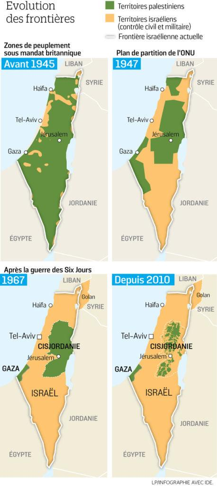
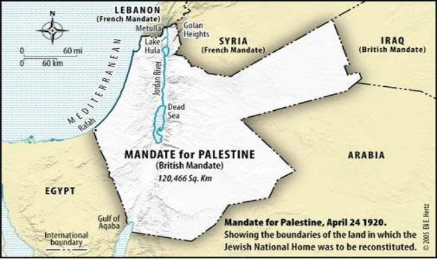
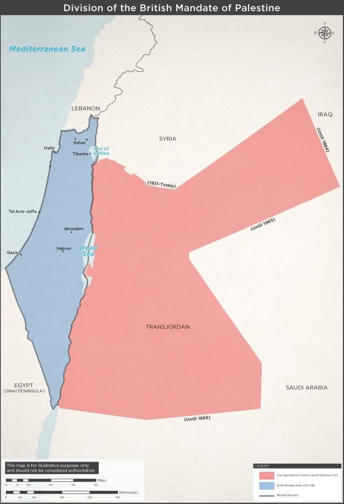
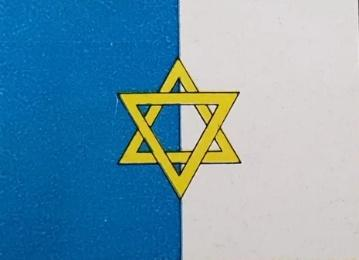

Par Jean Szlamowicz
19 juin 2020
Avec le plan d’annexion de la Judée-Samarie par Israël, l’actualité ne cesse de rappeler que l’histoire, pour se construire chaque jour, n’en est pas moins juchée sur le socle du passé. La question des appartenances territoriales, anciennes ou futures, de facto ou présumées, est au cœur des discours. Dans le discours médiatique comme dans le discours militant, la question territoriale s’articule à la perception de la légitimité des parties: elle est évidemment l’objet d’une intense bataille de représentations qui commence par l’usage de dénominations partisanes.
Il faut donc mettre à plat certaines réalités sémantiques, juridiques et politiques et revenir sur quelques évidences dénominatives et territoriales.
D’une part, l’occupation de certains territoires par Israël résulte de l’agression d’Israël par différentes entités arabo-musulmanes qui ont failli dans leur tentative de destruction de l’État Hébreu. Il ne s’agit donc pas d’une occupation de conquête, mais d’une occupation de défense de facto. De plus, les territoires concernés possèdent une histoire juridique: ils n’ont jamais appartenu à un État « palestinien » puisqu’il n’en a jamais existé.
Soulignons donc ce qui sera l’objet de notre article: jusqu’aux années soixante, l’adjectif « palestinien » désignait avant tout les Juifs: le mot Palestine possédait un sens géographique et désignait un territoire promis aux Juifs par la Déclaration Balfour, avant d’être manipulé pour prendre un sens politique où on lui a fait désigner un « peuple »: cette mutation sémantique constitue une mystification responsable de la mise en place d’une mythologie de la spoliation.
1. Cartographie et histoire: l’évidence narrative
La scientificité historique qui émane d’une carte géographique constitue une argumentation, laquelle repose sur l’articulation de l’image et des catégories qui y sont intégrées par la légende. Imposture territoriale autant que discursive, la présentation partisane du conflit israélo-arabe résume par son organisation dénominative les enjeux historiques et langagiers de l’idéologie contemporaine.
L’évocation de l’histoire des « frontières », dont l’omniprésente manipulation médiatique mérite des éclaircissements, se signale notamment par une revendication de légitimité. Les réseaux sociaux et les grands médias [1] diffusent les cartes suivantes (on les trouve sous diverses formes dans diverses langues) qui constituent un argument dans la perspective d’une condamnation morale car ils sont censés prouver une spoliation graduelle par Israël des « territoires palestiniens ». Ce jugement s’assoie sur la certitude historique et cartographique d’une injustice dont témoigneraient les images.

L’argumentaire pro-israélien dénonce en général, à raison, le terme de « territoires palestiniens avant 1945 » puisqu’il n’existait pas d’entité « palestinienne ». Mais le mensonge historique est en réalité plus profond et se fonde sur la suggestion d’une symétrie: ces cartes indiquent également « territoires israéliens ». C’est dans cette symétrie que s’instaure une opposition révisionniste: en 1945, puisque tout le territoire est sous mandat britannique, il n’existe pas de « territoires » au pluriel, ni palestiniens, ni israéliens.

2. L’incohérence dénominative
On remarque, entre autres confusions dénominatives que la première carte porte la mention « zones de peuplement », la suivant un plan de partition qui n’a jamais été appliqué, tandis que les suivantes semblent indiquer des délimitations de souveraineté.
L’incohérence des légendes cartographiques confond peuplements et entités politiques, frontières potentielles (« plan de partition ») et frontières réelles: ces cartes ne représentent donc jamais la même chose, ce qui leur permet de faire disparaître les Arabes de Palestine des cartes pour démontrer une spoliation — alors qu’ils vivent, bien sûr, en Israël dont ils constituent 20% de la population.
Une cartographie conceptuellement rigoureuse ferait apparaître non pas une diminution de surface de « territoires palestiniens », mais leur absence totale en 1947 et leur apparition radicalement inédite en 1993 grâce aux accords d’Oslo, fruit des négociations avec Israël.
La carte suivante propose une autre lecture de la situation historique en 1947.

Source: Israel Foreign Ministry of Foreign Affairs (Une source palestinienne comme Passia présente une cartographie identique).
3. L’usage historique du mot Palestine
Le linguiste Ferdinand de Saussure rappelait le principe de base des systèmes, qui est à l’œuvre dans la langue, à savoir que tout y est différence: « Si vous augmentez d’un signe la langue, vous diminuez d’autant la signification des autres ». [2] L’imposture consistant à créer une entité de manière rétroactive modifie la valeur des termes contemporains. Dire « palestinien » aujourd’hui, c’est accréditer l’idée d’une entité historique et donc d’une dépossession dont Israël serait l’auteur.
L’anachronisme dénominatif de ces cartes consiste à partir, à rebours, de la revendication contemporaine d’une Palestine qui serait arabo-musulmane.
À l’époque, Palestine désigne tout le territoire dans son ensemble et, dans l’usage, « palestinien » renvoyait surtout, culturellement, à la présence juive en Palestine. C
’est le cas par exemple dans l’ouvrage de Joseph Bonsirven, Le judaïsme palestinien au temps de Jésus- Christ (1935). A titre de témoin de cette évolution sémantique, la notule du dictionnaire Larousse de 1925 pour le nom Palestine comprend l’indication suivante:
PALESTINE: contrée de la Syrie, entre la Phénicie au Nord, la mer Morte au Sud, la Méditerranée à l’Ouest, et le désert de Syrie à l’Est, arrosé par le Jourdain. C’est une bande de terre étroite, resserrée entre la mer le Liban, et parcourue par le Jourdain, qui s’y jette dans la mer Morte. C’est aujourd’hui un Etat juif sous le mandat de l’Angleterre; 770.000 habitants. Capitale Jérusalem.
Le drapeau de la Palestine figurant dans l’édition du Larousse de 1934 est bleu et blanc avec Magen David au centre.

Cela explique que les titres de la presse narrent les événements de mai 1948 en donnant au nom Palestine un sens géographique: le journal parisien L’Intransigeant titre « Les Arabes envahissent la Palestine »; Le Soir, journal belge annonce:« Les troupes arabes envahissent la Palestine » (16 mai 1948), L’Humanité parle du « gouvernement juif de Palestine » (15 mai 1948); Paris Presse titre: «
Les forces arabes coalisées envahissent la Palestine » (16-17 mai 1948); Le Figaro constate: « Les troupes arabes franchissent les frontières de Palestine » (15 mai). De la même manière, en anglais, le 4 décembre 1945, le New York Times titre Arabs to boycott Palestinian goods — c’est-à-dire les marchandises juives.
Si l’on remonte plus loin encore, les termes des accords Fayçal-Weizmann signés à Londres le 3 janvier 1919 montrent les usages dénominatifs et leur contrepartie référentielle avec netteté puisque « l’état arabe » n’a pas de nom que l’état juif s’appelle à l’époque « Palestine » (et pas encore « Israël »):
« Son Altesse Royale l’Emir Faysal, représentant et agissant au nom du royaume arabe de Hedjaz et le Docteur Haïm Weizmann, représentant de l’Organisation sioniste et agissant en son nom, conscients de la parenté raciale et des liens anciens existant entre les peuples arabes et juifs, reconnaissant que le moyen le plus sûr de réaliser leur aspirations naturelles passe par la collaboration la plus étroite possible afin de développer l’État arabe et la Palestine, et désirant par ailleurs confirmer la bonne entente existant entre eux, sont convenus des articles suivants:
Art. 1. L’Etat arabe et la Palestine établiront entre eux la meilleure entente [goodwill and understanding] et, à cette fin, les responsables arabes et juifs seront maintenus et confirmés dans leurs territoires respectifs.
Art. 2. Dès la fin de la conférence de la paix, les frontières entre l’Etat arabe et la Palestine seront délimitées par une commission dont conviendront les deux parties ».
On constate donc, incontestablement, dans les usages linguistiques, que le référent de Palestine est un territoire considéré comme le foyer national juif: l’adjectif et le substantif dérivés comportent donc le trait sémantique « juif ».
Dans un esprit collaboratif singulier, on note une proposition d’Itamar Ben Avi dans son ouvrage L’Enclave: Pour une confédération judéo-arabe en 1931. Il y envisage la présence juive et arabe sur le territoire de la Palestine comme autorisant une possible coexistence unifiée par ce qu’il nomme le palestinisme, forme de nationalisme regroupant Juifs et Arabes, respectivement dénommés « Cananéens » et « Génubiens », et auxquels il envisageait d’attribuer deux cantons, « Juda » et « Ismaël ».
Cet usage particulier du mot reconduit, là encore, le fait que Palestine désigne avant tout un territoire dont la configuration identitaire reste alors à déterminer. Cela n’aurait jamais été le cas si Palestine avait désigné un État et un peuple déjà identifiés comme arabes.
Le sens moderne de Palestinien est en fait un compactage qu’il faudrait expliciter en disant « Arabe vivant sur le territoire appelé autrefois Palestine »: cette ellipse sémantique possède des effets politiques considérables puisqu’elle annule l’histoire de ces territoires et supprime la légitimité territoriale israélienne pour y substituer une légitimité territoriale arabe, grâce à une dénomination qui permet la création d’une entité soudain dotée d’une existence et même d’une ancienneté présumée.
Notons à cet égard que l’UNRWA, l’agence dévolue aux « réfugiés palestiniens », définit ces réfugiés de manière fort exceptionnelle comme « une personne dont le lieu de résidence normal était la Palestine, pendant au moins deux ans avant le conflit de 1948 et qui, en conséquence de ce conflit, a perdu à la fois son foyer et ses moyens d’existence ».
On remarque donc que l’ancienneté territoriale est parfaitement récente et permet ainsi d’inclure les très nombreux Arabes d’Egypte, d’Irak, etc. venus s’installer en Palestine pour profiter du développement du yishouv par l’initiative juive notamment sur le plan agricole (un tiers du territoire cultivable en 1931) [4]. C’était d’ailleurs le constat enthousiaste de nombreux dirigeants arabes de l’époque qui voyaient d’un bon œil le développement économique apporté par les pionniers juifs. [5]
Contrairement à l’essentialisation dénominative provoquée de manière trouble par le mot Palestinien, la population arabe ainsi désignée n’est donc pas nécessairement autochtone.
Elle l’est d’autant moins que cette définition juridique précise que le droit aux aides de l’agence s’applique aux réfugiés « et leurs descendants directs ». Le sens courant de réfugié est, selon le TLF, une « personne qui a trouvé refuge hors de sa région, de son pays d’origine dans lequel il était menacé (par une catastrophe naturelle, une guerre, des persécutions politiques, raciales, etc.) ».
Dans le cadre des revendications contemporaine sur le territoire d’Israël, on assiste donc à une nouvelle ellipse dénominative générant encore une forme d’appropriation: réfugié palestinien signifie aujourd’hui en réalité « descendant de réfugié » — à l’exception des personnes effectivement déplacées en 1948, lesquelles sont loin des 6 millions de personnes aujourd’hui revendiqués (entre 538 000 selon les sources israéliennes et 850 000 selon les sources palestiniennes). [6]
À côté de cette factualité historique que l’on connaît, l’outil Ngram Viewer de Google Books, avec toutes ses limites statistiques, permet néanmoins de remarquer un fait objectif: le mot palestinien (substantif ou adjectif) est quasi-inexistant dans leur base de données (qui est l’une des plus importantes au monde) jusqu’aux années 1920, apparaît faiblement vers 1945 et monte brusquement en flèche à partir de 1964.
Cela correspond exactement à la décision soviétique de soutenir la création de l’OLP afin d’utiliser la stratégie du « droit des peuples à disposer d’eux-mêmes » dans le cadre de la Guerre Froide pour s’en prendre au bloc de l’Ouest par l’intermédiaire d’Israël considéré comme satellite américain. [7]
Sur les cartes en cause — qui possèdent clairement aujourd’hui une valeur doxique — c’est le passage par une structure adjectivale qui permet de construire la fiction d’une perte de territoire. Si l’on partait du nom propre dont l’adjectif « palestinien » provient, on constaterait immédiatement qu’il n’est pas applicable puisqu’il n’existe pas de « Palestine » comme nation en 1945 mais uniquement comme région mandataire.
Il faut donc revenir sur le statut du nom propre « Palestine »: s’agit-il d’une entité politique ou géographique?
L’incantation du nom fait oublier que, comme les noms communs, les noms propres connaissent des variations dénotatives: Palestine sous Hadrien, en 1920, 1948 ou 2019 ne désigne pas la même chose.
Sur le plan pragmatique, Palestine ne désigne pas non plus la même chose selon le locuteur et son intention: militant islamique revendiquant l’ensemble du territoire (moins la Jordanie…), militant imaginant une Palestine à côté d’Israël, emploi par un historien, etc.
5. De la géographie à la politique
L’objectivité spatiale du substantif « territoire » est également une façon commode d’éluder le statut politique desdits territoires dont, simultanément, l’adjectif « palestinien » décide du titre de possession. Ce mode d’attribution d’une propriété n’est d’ailleurs jamais clairement défini — comme s’il était dans l’essence de l’espace de posséder des contours et des détenteurs. C’est une représentation préalable qui permet l’octroi d’un titre de propriété non pas sur une base historico-politique mais essentialiste.
Le problème fondamental est donc bien dénominatif. Ces cartes ne prennent pas en compte la modification du sens du mot Palestine. Il s’agit indubitablement d’un cas de néologie sémantique, à savoir l’invention d’un nouveau sens à un mot préexistant: Palestine possédait un sens géographique (désignant une région qui comprend les pays d’Israël et de Jordanie) et a graduellement pris un sens politique désignant une entité non étatique par le biais de la construction d’une fiction — « le peuple palestinien », inexistant jusque dans les revendications de 1948 qui étaient le fait des nations arabes.
Autrement dit, le problème est moins le contour de ces cartes que ce qu’ils prétendent décrire — une imposture dénominative dont l’acte sémiologique d’instauration possède des effets dénotatifs et, partant, argumentatifs. [8]
Pour malhonnêtes que soient ces discours, cartographiques et dénominatifs, on peut penser qu’il ne s’agit que d’un aspect partiel de la question. Un pays est susceptible de revendiquer des territoires pour de nombreuses raisons — économiques, militaires, démographiques, culturelles — mais la revendication palestinienne est fondée sur un principe qui n’est que partiellement nationaliste.
En effet, c’est moins l’obtention d’un état qui importe aux dirigeants palestiniens (puisque la Jordanie est cet État, qui existe déjà sur le territoire autrefois dénommé Palestine et qui était initialement promis aux Juifs dans son intégralité) que d’en interdire l’accès aux Juifs.
Leur revendication possède donc un fondement raciste et antisémite: il n’est pas envisageable que des Juifs vivent sur un territoire qui serait leur futur État. Et, comme ne cesse de le clamer l’Autorité Palestinienne, il n’est au fond pas non plus envisageable que des Juifs possèdent leur propre État à côté du leur, d’où la revendication du « droit au retour » qui permettrait de noyer Israël démographiquement en imposant une présence arabo-musulmane dominante.
Cette volonté de saper l’existence juive sur le territoire où elle est née est complaisamment relayée dans les médias européens, et notamment en France, qui reprennent le narratif territorial palestinien.
À cet égard, on comprend la violence des attaques contre la volonté de l’État hébreu de se définir comme juif: le principe du « droit des peuples à disposer d’eux-mêmes » n’est accordé que de mauvaise grâce aux Juifs par la communauté internationale puisqu’on ne cesse de leur reprocher de vouloir définir leur État comme juif. Il faudrait donc que leur État reste sous une sorte de tutelle morale et politique.
Le recours incantatoire à la formule « le droit international » et l’utilisation mal intentionnée de cartes frauduleuses fait bien peu de cas de la réalité juridique et historique réelle.
On ne peut que constater à quel point le systématisme de ces manœuvres vise à figer l’idée qu’Israël agit — toujours — de manière illégale autant qu’illégitime. La malhonnêteté des dénominations dessinant les souverainetés sur l’espace géographique montre bien que le problème n’est que faussement territorial: il s’agit essentiellement de délégitimer la souveraineté juive en la caractérisant comme spoliation fondamentale.
Quelques sources
Rastier François (2018), Heidegger, messie antisémite. Ce que révèlent les cahiers noirs, Le bord de l’eau.
Sibony Daniel (1999) Psychopathologie de l’actuel, Evénements III, Seuil.
Sibony Daniel (2004), L’énigme antisémite, Seuil.
Szlamowicz J. (2011), Détrompez-vous! Les étranges indignations de Stéphane Hessel décryptées, Intervalles.
Taguieff P-A. (dir.). (1992). Les Protocoles des Sages de Sion, vol. 1, Introduction à l’étude des Protocoles, un faux et ses usages dans le siècle, Berg International.
Trigano S. (2014). Le Post-modernisme, Hermann.
Trigano S. (2019). « Les trois âges du mythe de la Nakba: une déconstruction », 3 juin 2019, http://menora.info/les-trois-ages-du-mythe-de-la-nakba-une-deconstruction/
[1] Le Parisien, 16 mai 2018 et 4 juin 2019, source: InfoEquitable, 7 juin 2019, « Le Parisien diffuse une carte trompeuse des ‘territoires palestiniens perdus’ ».
[2] Cours de Linguistique Générale, ed. R. Engler, Otto Harrassowitz, Wiesbaden, tome 1 (1968). Bien sûr, un nom propre ne fonctionne pas tout à fait comme un nom commun. Il a notamment vocation à ne désigner qu’un seul référent sans possibilité de pluralisation ni de valeur générique — mais pas toujours: l’antonomase est un phénomène courant (« il a tendance à jouer les Don Juan »; « les bordeaux sont souvent très tanniques »). Il faudrait également distinguer entre noms de personnes, de sites naturels, de noms de rues, d’Etats, etc. car les propriétés sémantico-culturelles en sont variables. On peut considérer qu’un nom propre possède bel et bien des connotations et une dénotation, lesquelles connaissent des évolutions historiques, comme les autres mots de la langue. Cela pourrait être l’objet de développements plus théoriques qui n’ont pas leur place ici.
[3] Le processus de construction de cette « géographie symbolique » est résumé dans l’article du sociologue Shmuel Trigano: « Les trois âges du mythe de la Nakba: une déconstruction », 3 juin 2019, http://menora.info/les-trois-ages-du-mythe-de-la-nakba-une-deconstruction/
[4] En 1920, la SDN comptabilise 700 000 habitants. Selon Itzhak Galnoor (The Partition of Palestine: Decision Crossroads in the Zionist Movement, State University of New York Press, 1994, p.167), environ 100 000 Arabes sont arrivées uniquement entre 1922 et 1948. Les Britanniques non seulement avaient limité l’immigration juive par l’instauration de quotas mais avaient largement toléré l’immigration arabe en provenance de Syrie et d’Égypte. Lire aussi Walter Laqueur, Histoire du sionisme, Calmann- Lévy, 1973.
[5] Dawood Barakat, responsable du journal égyptien Al-Ahram constatait en 1914: « Les sionistes sont nécessaires pour le pays: l’argent qu’ils apporteront, leurs connaissances, leur intelligence et l’industrialisation qui les caractérise contribueront sans aucun doute à la régénération du pays », cité par Neville Mandel, « Attempts at an Arab- Zionist Entente: 1913–1914, » Middle Eastern Studies, (Avril 1965), p. 243.
[6] Ruth Lapidoth, « Aspects juridiques de la question des réfugiés palestiniens », Pardès, n°34 « L’Exclusion des Juifs des pays arabes », In Press, 2003.
[7] En témoigne, entre beaucoup d’autres sources, Ion Mihai Pacepa, ancien chef de la Securitate roumaine, dans son ouvrage The Kremlin Legacy (1993), dans une interview pour FrontPage Magazine (2004), dans « The KGB’s Man » pour le Wall Street Journal (22 septembre 2003), Il décrit aussi dans « Russian Footprints »(National Review, 24 août, 2006) l’Opération Sig (Sionistskiye Gosudarstva, ie, « gouvernements sionistes »), lancée par l’URSS en 1972, notamment en envoyant des agents pour diffuser des milliers d’exemplaires du Protocoles des Sages de Sion (voir Taguieff, 1992). On trouve certes l’emploi du mot palestinien chez l’écrivain chrétien orthodoxe Khalil Beidas (pour la première fois en 1898), mais certainement pas dans le sens contemporain. De même chez Farid Georges Kassab, chrétien orthodoxe de Beyrouth, qui en 1909 publie Palestine, Hellenism, and Clericalism et remarque que « Les Ottomans orthodoxes palestiniens se désignent comme Arabes, ce qu’ils sont ». Ces emplois reflètent justement l’absence d’existence d’une nation palestinienne puisque la zone était sous domination mamelouke de 1250 à 1516 puis ottomane jusqu’à la fin de la Premières Guerre Mondiale (et auparavant sous contrôle romain, byzantin, arabe, croisé).
[8] Ce sont les cartes présentées par Mahmoud Abbas à l’ONU le 11 février 2020 pour rejeter le plan de paix américain. On voit sur quelles bases frauduleuses les revendications territoriales « palestiniennes » se fondent — même l’offre d’un territoire ne suffit pas à satisfaire des revendications qui portent, fondamentalement sur l’ensemble de la Palestine, c’est-à-dire qui visent à supprimer Israël de cette cartographie…
Les effets argumentatifs Le substantif Palestinien a donc des effets: en créant une catégorie représentée par un nom, on crée un peuple qui n’avait jamais existé comme tel et, par conséquent, on autorise la prétention à un état qui n’avait jamais non plus existé auparavant — même comme nation juive puisque Syria Palæstina est le nom imposé par l’empereur Hadrien en 135 ap. J-C en remplacement du royaume de Judée, précisément pour en annuler la souveraineté juive suite à la révolte de Shimon bar Kokhba (132-135). Autrement dit, historiquement, les « Palestiniens » de 1948 sont les habitants de la Palestine Mandataire — juifs et arabes (même si l’usage spontané renvoyait surtout aux Juifs) — ce qui est exactement l’inverse du sens contemporain qui réserve le mot Palestinien uniquement aux Arabes. Cette substitution sémantique autant que politique a pour « finalité d’essentialiser politiquement et théologiquement le territoire en question » [3] et cela n’a lieu qu’après 1964. ↩